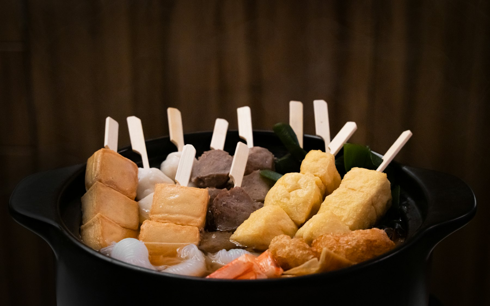
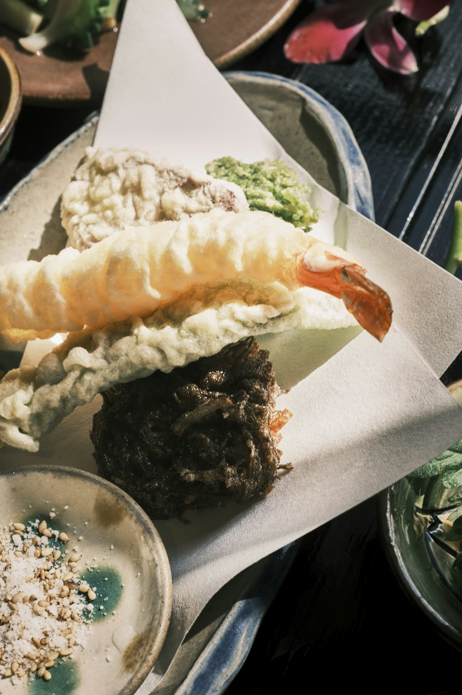

おでんと天ぷらを、
もっと身近に。Oden and tempura,
close to home.
西日暮里の、おでんと天ぷらのお店。お出汁を使ったお料理を多めにご用意しています。An oden and tempura restaurant in Nishi-Nippori, with plenty of dishes built on dashi.
今夜のおでん鍋Tonight's oden pot
16:00〜23:00。おでんの残り具合により早閉めすることがあります。16:00–23:00. We may close early once the oden runs out.

※写真はイメージですSample photoMENU
お出汁でつながる、三つの味。Three things, one dashi.
おでん
じっくり煮込んだおでんSlow-simmered oden
半熟たまごや、おでんみそなど。Soft-boiled egg, oden with miso and more.
天ぷら
揚げたての天ぷらFresh tempura
おでんと一緒に、揚げたてを。Straight from the fryer, alongside the oden.
お出汁
お出汁のお料理Dashi dishes
お出汁を生かしたお料理を多めに。A good number of dishes built around dashi.
※ 価格・内容は正式公開時にお店の情報を掲載します。日本酒もあります。Prices to be confirmed. Japanese sake available.
TODAY'S POT
鍋の中は、日によって。The pot changes daily.
正式版では、その日のおでん種をお品書きの札のように並べて、売り切れたものから札を裏返すこともできます。On the real site, the day's oden can be listed like wooden menu tags — and flipped as each item sells out.
※ 札の中身は表示例です。札をタップすると「売切」表示を試せます。Tags shown as an example. Tap one to try the sold-out state.

ACCESS
西日暮里の、おだしめしFind us in Nishi-Nippori
- 住所Address
- 〒116-0013 東京都荒川区西日暮里6-58-8 trias658 101trias658 #101, 6-58-8 Nishi-Nippori, Arakawa, Tokyo 116-0013
- 営業時間Hours
- 16:00〜23:00（早閉めの場合あり）16:00–23:00 (may close early)
- 開店Opened
- 2025.2.25
- TEL
- 050-8884-3681
- odashimeshi@gmail.com
- @odashi_meshi
Googleマップ ★4.0Google Maps ★4.0